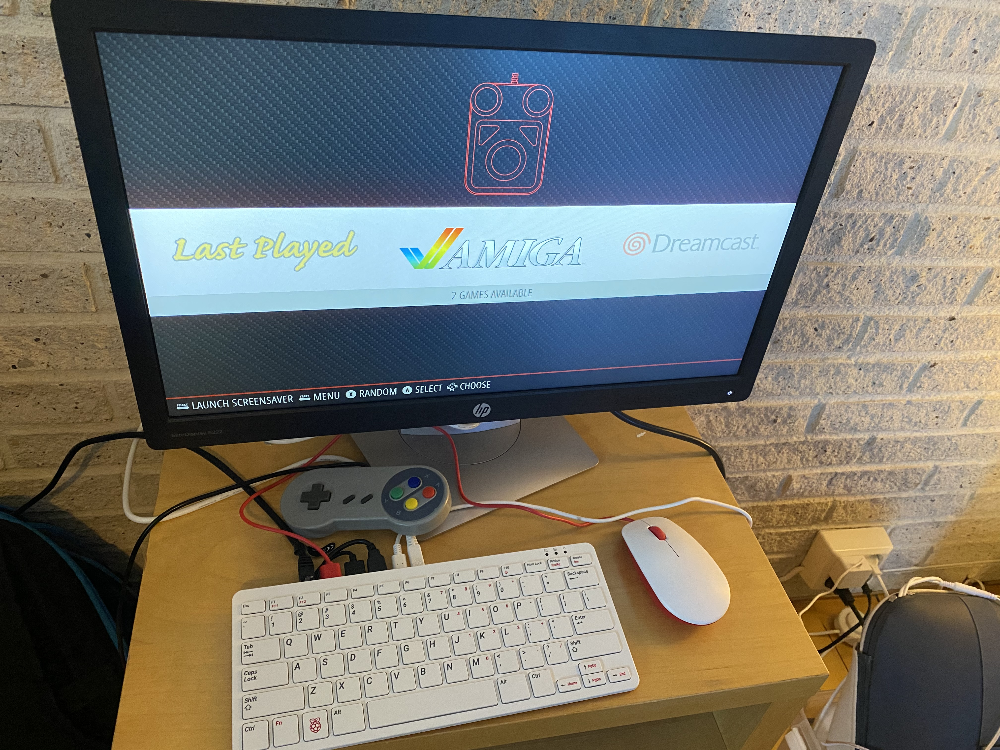
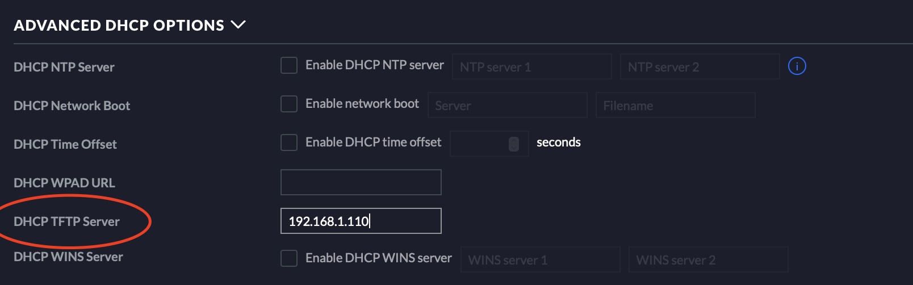

Introduction
I am a hopeless collector of Raspberry Pi’s: they come out, I try to grab them. And when I saw the Raspberry Pi 400, being the nostalgic ex-Amiga user that I am, I knew I just had to buy one. My little daughter sometimes asks me to boot the Pi with RetroPie, so that she can play Road Warrior, an old Nintendo game that I used to play when I was a kid.

Swapping those SD cards is annoying, though. And having lost a lot of work on SD cards before has made me not trust the Pi as much when I need something to be a bit more permanent.
So I read that it is easy to get the Raspberry Pi booting off the network, and I decided it was time to try it.
I followed these two guides:
It worked fine, with two caveats:
- My Pi would not get the TFTP address from
dnsmasq - NSF 4 didn’t work for me (and it still doesn’t)
I use TrueNAS at home, and I have a Unifi Security Gateway, which allow me to configure some DHCP options. Doing that made my life a bit easier, actually, in that I only had to configure the NFS share and the TFTP service, and things worked.
So I’ll try to sum up how I got this working, without dnsmasq and using my TrueNAS.
Goal
My goal is to boot by Raspberry Pi 400 off my network. I want to boot RetroPie, since the obvious advantage is that I’d have even more space to roms if I need to. And this way, if I connect another Raspberry Pi to my TV, I could boot off the same share (if you do that, notice that you shouldn’t use both systems simultaneously)
List of used equipment/software
- Raspberry Pi 400 (should work with a Raspberry Pi 4)
- An SD card with RetroPie installed on it
- FreeNAS/TrueNAS (for the NFS and TFTP services - you can use other servers, of course)
- Unifi Security Gateway (should work with other DHCP servers - YMMV).
Creating the shares at the FreeNAS
First, we need to create the directories where we are going to put the files the Pi will boot off:
- Create a new dataset on your pool. Give it a name (let’s say,
pi). Accept the default options. So if your pool is calledmypool, you will end up with a folder called/mnt/mypool/pi
On the shell, do this:
$ mkdir -p /mnt/mypool/pi/boot
$ chmod 777 /mnt/mypool/pi/boot
Note that this is assuming I will not boot other Pi’s with different OS’s. If you want to do that, it is probably best to create a directory with the serial number of the Pi you want to boot. See Step 6 here. The Pi first looks for its files on the remote computer on a folder with its serial number. If it doesn´t find one, it looks for the root folder. I am using this latter approach.
Now, we are going to configure the TFTP service, which is used by the Pi to load the OS:
- On the
Servicesmenu of your FreeNAS/TrueNAS, enable TFTP, and edit it. - Choose the
/mnt/mypool/pi/bootas the folder to be shared by the TFTP service.
Then we have to configure the NFS share.
- On the
Sharingmenu, chooseUnix shares (NFS), and click onAdd - On Path, choose
/mnt/mypool/pi - Click
All dirs, and thenAdvanced options - On
Maproot user, chooseroot, and onMaproot group, choosewheel. - Choose the network and/or hosts that will be allowed to mount your share
Note that security-wise these might not be the best permissions. Proceed with caution!
There! Now your FreeNAS is configured to serve your Pi! It needs the files, though…
Transferring the files from the Pi
The tutorials I referred to at the beginning of this article are based on an installation of a fresh image of an OS (Raspbian). I would rather copy an existing OS that I have installed on an SD card.
To do that, I had to copy the contents of the two partitions of the SD card - the root and the boot partitions.
I use a Mac, so the root partition is not automatically readable on macOS. But if you are using an Intel-based mac, you can do this:
$ brew install cask osxfuse
$ brew install ext4fuse
This way, you can mount the root partition of the SD card after inserting it on your SD card reader:
disklist list # check what's the name of the linux partition of the SD card - for example, disk2s2
sudo ext4fuse /dev/disk2s2 /tmp/raspberry
Caveat: This method has the problem that the directories are mounted as read-only. I changed a few (such as
/home) recursively so that they could be writeable again after copying. If you have access to a Linux machine, you’re better off just copying the files from there instead.
If all works fine, you now have the files you need. Let’s copy the boot folder to the FreeeNAS:
$ scp -r /Volumes/boot/* myuser@myfreenasaddress:/mnt/mypool/pi/boot/.
However, due to the incompatibility of some filenames between Mac and Linux, we have to do an extra step to copy the root partition:
brew install gnu-tar
sudo gtar czf rasp.tgz /tmp/raspberry
scp rasp.tgz myuser@myfreenasaddress:/mnt/mypool/.
Now, on your FreeNAS:
cd /mnt/mypool
tar -xzf rasp.tgz
mv raspberry/* pi/*
Adjustments on the configurations for booting
Good? Good. We just need to substitute two files on your FreeNAS:
cd /mnt/mypool/pi/boot
rm start4.elf
rm fixup4.dat
wget https://github.com/Hexxeh/rpi-firmware/raw/stable/start4.elf
wget https://github.com/Hexxeh/rpi-firmware/raw/stable/fixup4.dat
Somehow, the /home/pi folder got the wrong permissions set when copying the files. I believe it is because, on a Mac, ext4 partitions are read-only (when mounting with ext4fuse), so that’s probably why it happened. So let’s fix this:
$ chmod -R 750 /mnt/mypool/pi/home/pi
Now, we going to configure the pi to mount your nfs share. Edit the cmdline.txt:
$ nano /mnt/mypool/pi/boot/cmdline.txt
Erase the existing configuration andcopy this one:
console=serial0,115200 console=tty root=/dev/nfs nfsroot=192.168.1.110:/mnt/mypool/pi,vers=3 rw ip=dhcp rootwait elevator=deadline
There are few other configurations from the RetroPie install on this
cmdline.txtfile, such asconsoleblank=0. This one, for example, is safe to keep, though I also removed it so I can see if there are errors while booting.
And finally, edit the /mnt/mypool/pi/etc/fstab and remove the two lines you see there with UUID mountings.
There! You got the FreeNAS all configured to serve your files. Now, let’s get your Pi to boot off the network.
Configuring the Pi firmware
In the tutorials I mentioned, you need to download a newer firmware to your Raspberry Pi 4 to get things working, but most Pi’s now have a newer firmware and thus are able to boot off the network. You need to configure it, though. Boot your Pi with an existing Raspbian installed, and type
$ rpi-eeprom-config --edit
Add this option:
BOOT_ORDER=0x21
This will make the Pi to attempt booting off the SD card and, if it isn’t present, it will then try to boot off the ethernet. You have other boot options. For more information, check the documentation of the bootloader.
Now, we can configure something else: if you don’t want to install dnsmasq, or don’t want to configure your DHCP server to send the FreeNAS (TFTP) address to your pi on boot, you can add this configuration as well:
TFTP_IP=192.168.1.110
Change the above IP address to the one corresponding to your FreeNAS. If you choose to add this, you are all set, actually. Just save the configuration, reboot, then reboot again, this time without your SD card.
If you’d rather have your DHCP server to send the TFTP address to your Pi, read on.
Configuring your Unifi DHCP to send TFTP information
Open your Unifi Controller on your browser, and go to the Networks session on the Settings menu. Choose the network where your Pi will be configured (for example LAN), and click on “Advanced DHCP options”. There, enter the address of your FreeNAS on the DHCP TFTP Server field:

Save it, and bang, you are done. Now you will be able to boot your Pi off your RetroPie! I have used a bit now, and it is working as it should. I didn’t manage to upgrade it, though, probably due some permission issues, so I boot off the SD card again, did a sudo apt update and a sudo apt dist-upgrade and redid the copying of the files to the NAS. The best is if you install RetroPie from the scratch, using the instructions on the tutorials I mentioned (they also apply to the RetroPie, as it is Raspbian-based).
Conclusion
I really enjoyed this. I didn’t seem to get a much speedier boot, since the Raspberry 4 already reads the SD card at a higher speed. But the flexibility of dual booting, and also of being able have much more storage for my RetroPie, made this really worth it.
I really hope that someone comes up with a tutorial on how to get a PXE-menu working. Probably using the UEFI firmware would help here, but I am not sure my OS’es would boot when UEFI is loaded, and it seems it also needs to boot the UEFI from an SD card, which is something I really want to avoid.